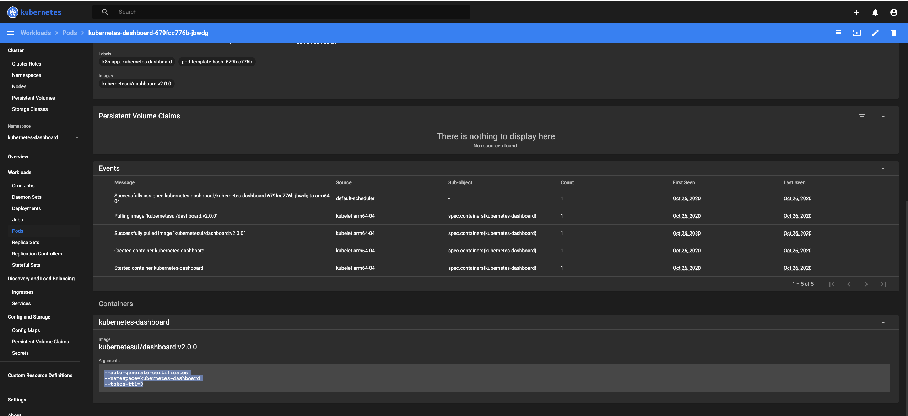

Table of Contents
-
Setup MicroK8s
- Reference
-
Setup
- ARM64 Init
-
Node
- pi@arm64-05:~$ sudo passwd dbuddenbaum
- #( 02/18/24@ 1:00AM )( donbuddenbaum@donbs-imac ):~/Documents/Kalaxy2/cloud-init-setup@main✗✗✗
- dbuddenbaum@donb-ms7821:~$ ssh-keygen -f “/home/dbuddenbaum/.ssh/known_hosts” -R “192.168.2.51”
- dbuddenbaum@arm64-05:~$ sudo snap install microk8s –classic –channel=1.29/stable
- buddenbaum@arm64-01:~$ sudo microk8s add-node
- dbuddenbaum@arm64-05:~$ sudo usermod -a -G microk8s dbuddenbaum
- dbuddenbaum@arm64-05:~$ sudo chown -f -R dbuddenbaum ~/.kubesudo chown -f -R dbuddenbaum ~/.kube
- #### dbuddenbaum@arm64-05:~$ newgrp microk8s
- dbuddenbaum@arm64-05:~$ microk8s join 192.168.2.51:25000/64fd2ec74c48cdd2d113805beead7a28/307234781a84 –worker
- dbuddenbaum@arm64-01:~$ microk8s config > config
- Cluster
-
Dashboard
- #( 02/18/24@ 3:04PM )( donbuddenbaum@donbs-imac ):~/Documents/Kalaxy2/yaml/microk8s/k8s-dashboard@main✗✗✗
- #( 02/18/24@ 3:04PM )( donbuddenbaum@donbs-imac ):~/Documents/Kalaxy2/yaml/microk8s/k8s-dashboard@main✗✗✗
- Token with Duration
- #( 02/18/24@ 3:13PM )( donbuddenbaum@donbs-imac ):~/Documents/Kalaxy2/yaml/microk8s/k8s-dashboard@main✗✗✗
- Observability
- Grafana
- Config for Kubectl
-
GPU
- (08/22/24@13:17:35)dbuddenbaum@amd64-01:~$ microk8s enable nvidia
- #( 08/22/24@ 1:23PM )( donbuddenbaum@donbs-imac ):~/Documents/Kalaxy2/yaml/gpu@main✗✗✗
- #( 08/22/24@ 1:26PM )( donbuddenbaum@donbs-imac ):~/Documents/Kalaxy2/yaml/gpu@main✗✗✗
- #( 08/22/24@ 1:29PM )( donbuddenbaum@donbs-imac ):~/Documents/Kalaxy2/yaml/gpu@main✗✗✗
- #( 08/22/24@ 1:30PM )( donbuddenbaum@donbs-imac ):~/Documents/Kalaxy2/yaml/gpu@main✗✗✗
- Setup AMD64 Nvidia GPU
- Remove Node
-
Remove Microk8s
- (08/26/24@12:10:43)dbuddenbaum@arm64-02:~$ sudo snap remove microk8s
- (08/26/24@12:12:11)dbuddenbaum@arm64-02:~$ sudo rm -rf /var/snap/microk8s/
- (08/26/24@12:13:06)dbuddenbaum@arm64-02:~$ sudo rm -rf /var/snap/microk8s-common/
- (08/26/24@12:13:07)dbuddenbaum@arm64-02:~$ ps aux | grep microk8s
- (08/26/24@12:13:21)dbuddenbaum@arm64-02:~$ sudo rm -rf /etc/kubernetes/
- Rejoin the cluster
-
Dqlite Repair
- (08/26/24@14:45:52)dbuddenbaum@arm64-01:~$ microk8s join 192.168.2.61:25000/xxxxxxx…..
- (08/26/24@14:52:00)dbuddenbaum@amd64-01:~$ sudo /snap/microk8s/current/bin/dqlite -s file:///var/snap/microk8s/current/var/kubernetes/backend/cluster.yaml -c /var/snap/microk8s/current/var/kubernetes/backend/cluster.crt -k /var/snap/microk8s/current/var/kubernetes/backend/cluster.key -f json k8s “.remove 192.168.2.51:19001”
- (08/26/24@14:52:25)dbuddenbaum@amd64-01:/var/snap/microk8s/current/var/kubernetes/backend$ vi cluster.yaml
Setup MicroK8s
Reference
Setup
ARM64 Init
#( 02/17/24@10:43PM )( donbuddenbaum@donbs-imac ):~/Documents/Kalaxy2/cloud-init-setup@main✔
flash –userdata cloud-config-4.yml ~/Downloads/RPI-USB-BOOT.img
Is /dev/disk2 correct? y
Unmounting /dev/disk2 ...
Unmount of all volumes on disk2 was successful
Unmount of all volumes on disk2 was successful
Flashing /Users/donbuddenbaum/Downloads/RPI-USB-BOOT.img to /dev/rdisk2 ...
Password:
3.03GiB 0:01:30 [34.3MiB/s] [=======================================================================================================================================================================================================================================================================================================================>] 100%
0+49604 records in
3100+1 records out
3250806272 bytes transferred in 77.088032 secs (42170051 bytes/sec)
Mounting Disk
Mounting /dev/disk2 to customize...
Copying cloud-init cloud-config-4.yml to /Volumes/system-boot/user-data ...
Unmounting /dev/disk2 ...
"disk2" ejected.
Finished.
Node
pi@arm64-05:~$ sudo passwd dbuddenbaum
New password:
Retype new password:
passwd: password updated successfully
#( 02/18/24@ 1:00AM )( donbuddenbaum@donbs-imac ):~/Documents/Kalaxy2/cloud-init-setup@main✗✗✗
ssh-copy-id dbuddenbaum@192.168.2.54
/usr/bin/ssh-copy-id: INFO: Source of key(s) to be installed: "/Users/donbuddenbaum/.ssh/id_rsa.pub"
/usr/bin/ssh-copy-id: INFO: attempting to log in with the new key(s), to filter out any that are already installed
/usr/bin/ssh-copy-id: INFO: 1 key(s) remain to be installed -- if you are prompted now it is to install the new keys
dbuddenbaum@192.168.2.54's password:
Number of key(s) added: 1
Now try logging into the machine, with: "ssh 'dbuddenbaum@192.168.2.54'"
and check to make sure that only the key(s) you wanted were added.##
dbuddenbaum@donb-ms7821:~$ ssh-keygen -f “/home/dbuddenbaum/.ssh/known_hosts” -R “192.168.2.51”
# Host 192.168.2.51 found: line 2
/home/dbuddenbaum/.ssh/known_hosts updated.
Original contents retained as /home/dbuddenbaum/.ssh/known_hosts.old
dbuddenbaum@arm64-05:~$ sudo snap install microk8s –classic –channel=1.29/stable
microk8s (1.29/stable) v1.29.0 from Canonical✓ installed
buddenbaum@arm64-01:~$ sudo microk8s add-node
From the node you wish to join to this cluster, run the following:
microk8s join 192.168.2.51:25000/64fd2ec74c48cdd2d113805beead7a28/307234781a84
Use the '--worker' flag to join a node as a worker not running the control plane, eg:
microk8s join 192.168.2.51:25000/64fd2ec74c48cdd2d113805beead7a28/307234781a84 --worker
If the node you are adding is not reachable through the default interface you can use one of the following:
microk8s join 192.168.2.51:25000/64fd2ec74c48cdd2d113805beead7a28/307234781a84
microk8s join 2603:6081:1e00:1075:dea6:32ff:febb:c8bf:25000/64fd2ec74c48cdd2d113805beead7a28/307234781a84
dbuddenbaum@arm64-05:~$ sudo usermod -a -G microk8s dbuddenbaum
dbuddenbaum@arm64-05:~$ sudo chown -f -R dbuddenbaum ~/.kubesudo chown -f -R dbuddenbaum ~/.kube
#### dbuddenbaum@arm64-05:~$ newgrp microk8s
dbuddenbaum@arm64-05:~$ microk8s join 192.168.2.51:25000/64fd2ec74c48cdd2d113805beead7a28/307234781a84 –worker
Contacting cluster at 192.168.2.51
The node has joined the cluster and will appear in the nodes list in a few seconds.
This worker node gets automatically configured with the API server endpoints.
If the API servers are behind a loadbalancer please set the '--refresh-interval' to '0s' in:
/var/snap/microk8s/current/args/apiserver-proxy
and replace the API server endpoints with the one provided by the loadbalancer in:
/var/snap/microk8s/current/args/traefik/provider.yaml
Successfully joined the cluster.
dbuddenbaum@arm64-01:~$ microk8s config > config
cd .kube
rsync dbuddenbaum@amd64-03:~/.kube/config config
Cluster
dbuddenbaum@amd64-03:~$ microk8s enable dns
Infer repository core for addon dns
Addon core/dns is already enabled
dbuddenbaum@amd64-03:~$ microk8s enable dashboard
Infer repository core for addon dashboard
Enabling Kubernetes Dashboard
Infer repository core for addon metrics-server
Enabling Metrics-Server
serviceaccount/metrics-server created
clusterrole.rbac.authorization.k8s.io/system:aggregated-metrics-reader created
clusterrole.rbac.authorization.k8s.io/system:metrics-server created
rolebinding.rbac.authorization.k8s.io/metrics-server-auth-reader created
clusterrolebinding.rbac.authorization.k8s.io/metrics-server:system:auth-delegator created
clusterrolebinding.rbac.authorization.k8s.io/system:metrics-server created
service/metrics-server created
deployment.apps/metrics-server created
apiservice.apiregistration.k8s.io/v1beta1.metrics.k8s.io created
clusterrolebinding.rbac.authorization.k8s.io/microk8s-admin created
Adding argument --authentication-token-webhook to nodes.
Metrics-Server is enabled
Applying manifest
serviceaccount/kubernetes-dashboard created
service/kubernetes-dashboard created
secret/kubernetes-dashboard-certs created
secret/kubernetes-dashboard-csrf created
secret/kubernetes-dashboard-key-holder created
configmap/kubernetes-dashboard-settings created
role.rbac.authorization.k8s.io/kubernetes-dashboard created
clusterrole.rbac.authorization.k8s.io/kubernetes-dashboard created
rolebinding.rbac.authorization.k8s.io/kubernetes-dashboard created
clusterrolebinding.rbac.authorization.k8s.io/kubernetes-dashboard created
deployment.apps/kubernetes-dashboard created
service/dashboard-metrics-scraper created
deployment.apps/dashboard-metrics-scraper created
secret/microk8s-dashboard-token created
If RBAC is not enabled access the dashboard using the token retrieved with:
microk8s kubectl describe secret -n kube-system microk8s-dashboard-token
Use this token in the https login UI of the kubernetes-dashboard service.
In an RBAC enabled setup (microk8s enable RBAC) you need to create a user with restricted
permissions as shown in:
https://github.com/kubernetes/dashboard/blob/master/docs/user/access-control/creating-sample-user.md
#( 04/09/24@ 9:43PM )( donbuddenbaum@donbs-imac ):~
kubectl patch –namespace kube-system deployment
kubernetes-dashboard –type=‘json’ –patch
‘[{“op”: “add”, “path”: “/spec/template/spec/containers/0/args/2”, “value”: “–token-ttl=43200” }]’
deployment.apps/kubernetes-dashboard patched
dbuddenbaum@amd64-03:~$ microk8s enable ingress
Infer repository core for addon ingress
Enabling Ingress
ingressclass.networking.k8s.io/public created
ingressclass.networking.k8s.io/nginx created
namespace/ingress created
serviceaccount/nginx-ingress-microk8s-serviceaccount created
clusterrole.rbac.authorization.k8s.io/nginx-ingress-microk8s-clusterrole created
role.rbac.authorization.k8s.io/nginx-ingress-microk8s-role created
clusterrolebinding.rbac.authorization.k8s.io/nginx-ingress-microk8s created
rolebinding.rbac.authorization.k8s.io/nginx-ingress-microk8s created
configmap/nginx-load-balancer-microk8s-conf created
configmap/nginx-ingress-tcp-microk8s-conf created
configmap/nginx-ingress-udp-microk8s-conf created
daemonset.apps/nginx-ingress-microk8s-controller created
Ingress is enabled
dbuddenbaum@amd64-03:~$ microk8s enable metallb
Enabling MetalLB
Enter each IP address range delimited by comma (e.g. '10.64.140.43-10.64.140.49,192.168.0.105-192.168.0.111'): 192.168.2.20-192.168.2.49
Applying Metallb manifest
customresourcedefinition.apiextensions.k8s.io/addresspools.metallb.io created
customresourcedefinition.apiextensions.k8s.io/bfdprofiles.metallb.io created
customresourcedefinition.apiextensions.k8s.io/bgpadvertisements.metallb.io created
customresourcedefinition.apiextensions.k8s.io/bgppeers.metallb.io created
customresourcedefinition.apiextensions.k8s.io/communities.metallb.io created
customresourcedefinition.apiextensions.k8s.io/ipaddresspools.metallb.io created
customresourcedefinition.apiextensions.k8s.io/l2advertisements.metallb.io created
namespace/metallb-system created
serviceaccount/controller created
serviceaccount/speaker created
clusterrole.rbac.authorization.k8s.io/metallb-system:controller created
clusterrole.rbac.authorization.k8s.io/metallb-system:speaker created
role.rbac.authorization.k8s.io/controller created
role.rbac.authorization.k8s.io/pod-lister created
clusterrolebinding.rbac.authorization.k8s.io/metallb-system:controller created
clusterrolebinding.rbac.authorization.k8s.io/metallb-system:speaker created
rolebinding.rbac.authorization.k8s.io/controller created
secret/webhook-server-cert created
service/webhook-service created
rolebinding.rbac.authorization.k8s.io/pod-lister created
daemonset.apps/speaker created
deployment.apps/controller created
validatingwebhookconfiguration.admissionregistration.k8s.io/validating-webhook-configuration created
Waiting for Metallb controller to be ready.
error: timed out waiting for the condition on deployments/controller
MetalLB controller is still not ready
deployment.apps/controller condition met
ipaddresspool.metallb.io/default-addresspool created
l2advertisement.metallb.io/default-advertise-all-pools created
MetalLB is enabled
dbuddenbaum@amd64-03:~$ microk8s enable helm3
Infer repository core for addon helm3
Addon core/helm3 is already enabled
dbuddenbaum@amd64-03:~$ microk8s enable observability
Infer repository core for addon observability
Addon core/dns is already enabled
Addon core/helm3 is already enabled
Enabling default storage class.
WARNING: Hostpath storage is not suitable for production environments.
A hostpath volume can grow beyond the size limit set in the volume claim manifest.
deployment.apps/hostpath-provisioner created
storageclass.storage.k8s.io/microk8s-hostpath created
serviceaccount/microk8s-hostpath created
clusterrole.rbac.authorization.k8s.io/microk8s-hostpath created
clusterrolebinding.rbac.authorization.k8s.io/microk8s-hostpath created
Storage will be available soon.
Enabling observability
Release "kube-prom-stack" does not exist. Installing it now.
NAME: kube-prom-stack
LAST DEPLOYED: Fri Mar 8 19:55:55 2024
NAMESPACE: observability
STATUS: deployed
REVISION: 1
NOTES:
kube-prometheus-stack has been installed. Check its status by running:
kubectl --namespace observability get pods -l "release=kube-prom-stack"
Visit https://github.com/prometheus-operator/kube-prometheus for instructions on how to create & configure Alertmanager and Prometheus instances using the Operator.
Release "loki" does not exist. Installing it now.
NAME: loki
LAST DEPLOYED: Fri Mar 8 19:56:53 2024
NAMESPACE: observability
STATUS: deployed
REVISION: 1
NOTES:
The Loki stack has been deployed to your cluster. Loki can now be added as a datasource in Grafana.
See http://docs.grafana.org/features/datasources/loki/ for more detail.
Release "tempo" does not exist. Installing it now.
NAME: tempo
LAST DEPLOYED: Fri Mar 8 19:56:56 2024
NAMESPACE: observability
STATUS: deployed
REVISION: 1
TEST SUITE: None
Adding argument --authentication-kubeconfig to nodes.
Adding argument --authorization-kubeconfig to nodes.
Restarting nodes.
Adding argument --authentication-kubeconfig to nodes.
Adding argument --authorization-kubeconfig to nodes.
Restarting nodes.
The connection to the server 127.0.0.1:16443 was refused - did you specify the right host or port?
Failed to list nodes (try 1): Command '['/snap/microk8s/6641/microk8s-kubectl.wrapper', 'get', 'node', '-o', 'json']' returned non-zero exit status 1.
Adding argument --metrics-bind-address to nodes.
Restarting nodes.
The connection to the server 127.0.0.1:16443 was refused - did you specify the right host or port?
Failed to list nodes (try 1): Command '['/snap/microk8s/6641/microk8s-kubectl.wrapper', 'get', 'node', '-o', 'json']' returned non-zero exit status 1.
Note: the observability stack is setup to monitor only the current nodes of the MicroK8s cluster.
For any nodes joining the cluster at a later stage this addon will need to be set up again.
Observability has been enabled (user/pass: admin/prom-operator)
Dashboard
#( 02/18/24@ 3:04PM )( donbuddenbaum@donbs-imac ):~/Documents/Kalaxy2/yaml/microk8s/k8s-dashboard@main✗✗✗
kubectl apply -f k8s-dashboard-adminuser.yaml
serviceaccount/admin-user created
clusterrolebinding.rbac.authorization.k8s.io/admin-user created
#( 02/18/24@ 3:04PM )( donbuddenbaum@donbs-imac ):~/Documents/Kalaxy2/yaml/microk8s/k8s-dashboard@main✗✗✗
kubectl apply -f k8s-dashboard-lb-svc.yaml
service/k8s-dashboard created
Token with Duration
#( 02/18/24@ 3:13PM )( donbuddenbaum@donbs-imac ):~/Documents/Kalaxy2/yaml/microk8s/k8s-dashboard@main✗✗✗
kubectl -n kube-system create token admin-user –duration=720h
😀
#( 02/18/24@ 3:13PM )( donbuddenbaum@donbs-imac ):~/Documents/Kalaxy2/yaml/microk8s/k8s-dashboard@main✗✗✗
kubectl get service -n kube-system
NAME TYPE CLUSTER-IP EXTERNAL-IP PORT(S) AGE
kube-dns ClusterIP 10.152.183.10 <none> 53/UDP,53/TCP,9153/TCP 17h
metrics-server ClusterIP 10.152.183.50 <none> 443/TCP 14h
kubernetes-dashboard ClusterIP 10.152.183.91 <none> 443/TCP 14h
dashboard-metrics-scraper ClusterIP 10.152.183.147 <none> 8000/TCP 14h
k8s-dashboard LoadBalancer 10.152.183.90 192.168.2.20 443:30545/TCP 21m
Kubernetes Dashboard Adjusting the timeout of the Kubernetes Dashboard
kubectl patch --namespace kubernetes-dashboard deployment \
kubernetes-dashboard --type='json' --patch \
'[{"op": "add", "path": "/spec/template/spec/containers/0/args/2", "value": "--token-ttl=43200" }]'
or


Observability
dbuddenbaum@arm64-01:~$ microk8s enable prometheus
Infer repository core for addon prometheus
DEPRECATION WARNING: 'prometheus' is deprecated and will soon be removed. Please use 'observability' instead.
Infer repository core for addon observability
Addon core/dns is already enabled
Addon core/helm3 is already enabled
Enabling default storage class.
WARNING: Hostpath storage is not suitable for production environments.
A hostpath volume can grow beyond the size limit set in the volume claim manifest.
deployment.apps/hostpath-provisioner created
storageclass.storage.k8s.io/microk8s-hostpath created
serviceaccount/microk8s-hostpath created
clusterrole.rbac.authorization.k8s.io/microk8s-hostpath created
clusterrolebinding.rbac.authorization.k8s.io/microk8s-hostpath created
Storage will be available soon.
Enabling observability
Release "kube-prom-stack" does not exist. Installing it now.
NAME: kube-prom-stack
LAST DEPLOYED: Sun Feb 18 18:11:07 2024
NAMESPACE: observability
STATUS: deployed
REVISION: 1
NOTES:
kube-prometheus-stack has been installed. Check its status by running:
kubectl --namespace observability get pods -l "release=kube-prom-stack"
Visit https://github.com/prometheus-operator/kube-prometheus for instructions on how to create & configure Alertmanager and Prometheus instances using the Operator.
Release "loki" does not exist. Installing it now.
NAME: loki
LAST DEPLOYED: Sun Feb 18 18:12:34 2024
NAMESPACE: observability
STATUS: deployed
REVISION: 1
NOTES:
The Loki stack has been deployed to your cluster. Loki can now be added as a datasource in Grafana.
See http://docs.grafana.org/features/datasources/loki/ for more detail.
Release "tempo" does not exist. Installing it now.
NAME: tempo
LAST DEPLOYED: Sun Feb 18 18:12:40 2024
NAMESPACE: observability
STATUS: deployed
REVISION: 1
TEST SUITE: None
Adding argument --authentication-kubeconfig to nodes.
Adding argument --authorization-kubeconfig to nodes.
Restarting nodes.
The connection to the server 127.0.0.1:16443 was refused - did you specify the right host or port?
Failed to list nodes (try 1): Command '['/snap/microk8s/6357/microk8s-kubectl.wrapper', 'get', 'node', '-o', 'json']' returned non-zero exit status 1.
Adding argument --authentication-kubeconfig to nodes.
Adding argument --authorization-kubeconfig to nodes.
Restarting nodes.
The connection to the server 127.0.0.1:16443 was refused - did you specify the right host or port?
Failed to list nodes (try 1): Command '['/snap/microk8s/6357/microk8s-kubectl.wrapper', 'get', 'node', '-o', 'json']' returned non-zero exit status 1.
Adding argument --metrics-bind-address to nodes.
Restarting nodes.
The connection to the server 127.0.0.1:16443 was refused - did you specify the right host or port?
Failed to list nodes (try 1): Command '['/snap/microk8s/6357/microk8s-kubectl.wrapper', 'get', 'node', '-o', 'json']' returned non-zero exit status 1.
Note: the observability stack is setup to monitor only the current nodes of the MicroK8s cluster.
For any nodes joining the cluster at a later stage this addon will need to be set up again.
Observability has been enabled (user/pass: admin/prom-operator)
Grafana
#( 02/20/24@ 6:54PM )( donbuddenbaum@donbs-imac ):~/Documents/Kalaxy2@main✗✗✗
kubectl get deployment -n observability
NAME READY UP-TO-DATE AVAILABLE AGE
kube-prom-stack-kube-prome-operator 1/1 1 1 2d
kube-prom-stack-kube-state-metrics 1/1 1 1 2d
kube-prom-stack-grafana 1/1 1 1 2d
#( 02/20/24@ 6:56PM )( donbuddenbaum@donbs-imac ):~/Documents/Kalaxy2@main✗✗✗
kubectl port-forward deployment/kube-prom-stack-grafana -n observability 3000
Forwarding from 127.0.0.1:3000 -> 3000
Forwarding from [::1]:3000 -> 3000
or for loadbalancer
#( 02/20/24@ 7:47PM )( donbuddenbaum@donbs-imac ):~/Documents/Kalaxy2/yaml/microk8s/prometheus@main✗✗✗
kubectl apply -f grafana-lb-svc.yaml
service/grafana-dashboard configured
Config for Kubectl
dbuddenbaum@arm64-01:~/.kube$
microk8s config > config
#( 02/29/24@ 7:05PM )( donbuddenbaum@donbs-imac ):~/.kube
rsync dbuddenbaum@arm64-01:~/.kube/config config
#( 02/29/24@ 7:05PM )( donbuddenbaum@donbs-imac ):~/.kube
ls
Untitled.pdf config.ha config.k8s.rpi4.old
cache config.imac config.rpi4.opensource
config config.k8s http-cache
#( 05/07/24@ 2:32PM )( donbuddenbaum@donbs-imac ):~
rsync -azP dbuddenbaum@arm64-05:~/.kube/config ~/.kube/config
receiving file list ...
1 file to consider
config
5462 100% 5.21MB/s 0:00:00 (xfer#1, to-check=0/1)
sent 38 bytes received 3676 bytes 1061.14 bytes/sec
total size is 5462 speedup is 1.47
GPU
(08/22/24@13:17:35)dbuddenbaum@amd64-01:~$ microk8s enable nvidia
Infer repository core for addon nvidia
Addon core/dns is already enabled
Addon core/helm3 is already enabled
Checking if NVIDIA driver is already installed
GPU 0: NVIDIA GeForce GTX 1070 (UUID: GPU-171e0276-e06a-e32f-2f3b-bd32e8253763)
"nvidia" has been added to your repositories
Hang tight while we grab the latest from your chart repositories...
...Successfully got an update from the "nvidia" chart repository
Update Complete. ⎈Happy Helming!⎈
Deploy NVIDIA GPU operator
Using host GPU driver
NAME: gpu-operator
LAST DEPLOYED: Thu Aug 22 13:18:13 2024
NAMESPACE: gpu-operator-resources
STATUS: deployed
REVISION: 1
TEST SUITE: None
Deployed NVIDIA GPU operator
#( 08/22/24@ 1:23PM )( donbuddenbaum@donbs-imac ):~/Documents/Kalaxy2/yaml/gpu@main✗✗✗
kubectl apply -f gpu-test-job-medium.yaml
pod/gpu-test-job-medium created
#( 08/22/24@ 1:26PM )( donbuddenbaum@donbs-imac ):~/Documents/Kalaxy2/yaml/gpu@main✗✗✗
kubectl logs pod/gpu-test-job-medium
[Vector addition of 50000 elements]
Copy input data from the host memory to the CUDA device
CUDA kernel launch with 196 blocks of 256 threads
Copy output data from the CUDA device to the host memory
Test PASSED
Done
#( 08/22/24@ 1:29PM )( donbuddenbaum@donbs-imac ):~/Documents/Kalaxy2/yaml/gpu@main✗✗✗
kubectl apply -f gpu-test-job-high.yaml
pod/gpu-test-job-high created
#( 08/22/24@ 1:30PM )( donbuddenbaum@donbs-imac ):~/Documents/Kalaxy2/yaml/gpu@main✗✗✗
kubectl logs pod/gpu-test-job-high
[Vector addition of 50000 elements]
Copy input data from the host memory to the CUDA device
CUDA kernel launch with 196 blocks of 256 threads
Copy output data from the CUDA device to the host memory
Test PASSED
Done
Setup AMD64 Nvidia GPU
(08/22/24@13:32:08)dbuddenbaum@amd64-01:~$ inxi -G
Graphics:
Device-1: NVIDIA GP104 [GeForce GTX 1070] driver: nvidia v: 535.183.01
Display: server: X.org v: 1.21.1.11 with: Xwayland v: 23.2.6 driver: X:
loaded: modesetting,nouveau,nvidia unloaded: fbdev,vesa gpu: nvidia,nvidia-nvswitch tty: 133x66
resolution: 1: 2560x1440
API: EGL v: 1.5 drivers: nvidia,swrast platforms: surfaceless,device
API: OpenGL v: 4.6.0 compat-v: 4.5 vendor: mesa v: 24.0.9-0ubuntu0.1
note: console (EGL sourced) renderer: NVIDIA GeForce GTX 1070/PCIe/SSE2, llvmpipe (LLVM 17.0.6
256 bits)
dbuddenbaum@amd64-02:~$ sudo snap install nvtop
[sudo] password for dbuddenbaum:
nvtop 3.1.0 from Maxime Schmitt (razortealeaf) installed
Remove Node
(08/26/24@12:00:28)dbuddenbaum@arm64-02:~$ microk8s leave
Generating new cluster certificates.
Waiting for node to start. .
(08/26/24@12:02:49)dbuddenbaum@amd64-01:~$ microk8s remove-node arm64-01
Remove Microk8s
(08/26/24@12:10:43)dbuddenbaum@arm64-02:~$ sudo snap remove microk8s
microk8s removed
(08/26/24@12:12:11)dbuddenbaum@arm64-02:~$ sudo rm -rf /var/snap/microk8s/
(08/26/24@12:13:06)dbuddenbaum@arm64-02:~$ sudo rm -rf /var/snap/microk8s-common/
(08/26/24@12:13:07)dbuddenbaum@arm64-02:~$ ps aux | grep microk8s
dbudden+ 461338 0.0 0.0 5968 668 pts/0 S+ 12:13 0:00 grep --color=auto microk8s
(08/26/24@12:13:21)dbuddenbaum@arm64-02:~$ sudo rm -rf /etc/kubernetes/
Rejoin the cluster
(08/26/24@12:19:30)dbuddenbaum@arm64-02:~$ sudo snap install microk8s –classic –channel=1.29/stable
microk8s (1.29/stable) v1.29.8 from Canonical✓ installed
(08/26/24@12:21:45)dbuddenbaum@arm64-02:~$ microk8s join 192.168.2.61:25000/21738774876b9de75538fae2501f8c4f/a888dd82d6b2
Contacting cluster at 192.168.2.61
Waiting for this node to finish joining the cluster. .. .. .. ..
Successfully joined the cluster.
Dqlite Repair
(08/26/24@14:45:52)dbuddenbaum@arm64-01:~$ microk8s join 192.168.2.61:25000/xxxxxxx…..
Contacting cluster at 192.168.2.61
Connection failed. Failed to retrieve dqlite cluster nodes: the joining node (192.168.2.51) is already known to dqlite (500).